剧情变量驱动
疫苗持有人、阿拓是否救过许燃、音爆弹是否修好、沈砚感染状态共同决定后续路线。
Game Story Demo
一款关于“无效疫苗也必须被护送”的末世悬疑互动视觉小说。玩家不是寻找标准答案，而是在信息不完整、信任崩塌和感染逼近中承担判断后果。
Demo Focus
游戏特点 / 剧情设计 / 多故事线 / 8 个结局
One Sentence Pitch
灰隼临死前说，疫苗无效。沈砚小队仍必须把它带回安全区。
核心张力：希望可能是假的，但放弃希望一定是真的。
Game Features
疫苗持有人、阿拓是否救过许燃、音爆弹是否修好、沈砚感染状态共同决定后续路线。
一次救命可能改变卧底开枪的瞬间；一次分组决定后面谁有机会夺箱。
灰隼信号、记录仪、通讯器、白鸮暴露都在为最后的信任崩塌铺路。
音爆弹不是单纯武器，而是改变逃亡方向、救援结果和生死代价的路线开关。
不同路径可能抵达同一主题结局，叙事关注的是代价类型，而不是机械数量堆叠。
黑底旁白、角色登场、对峙画面和结局图组成演示化、可传播的视觉节奏。
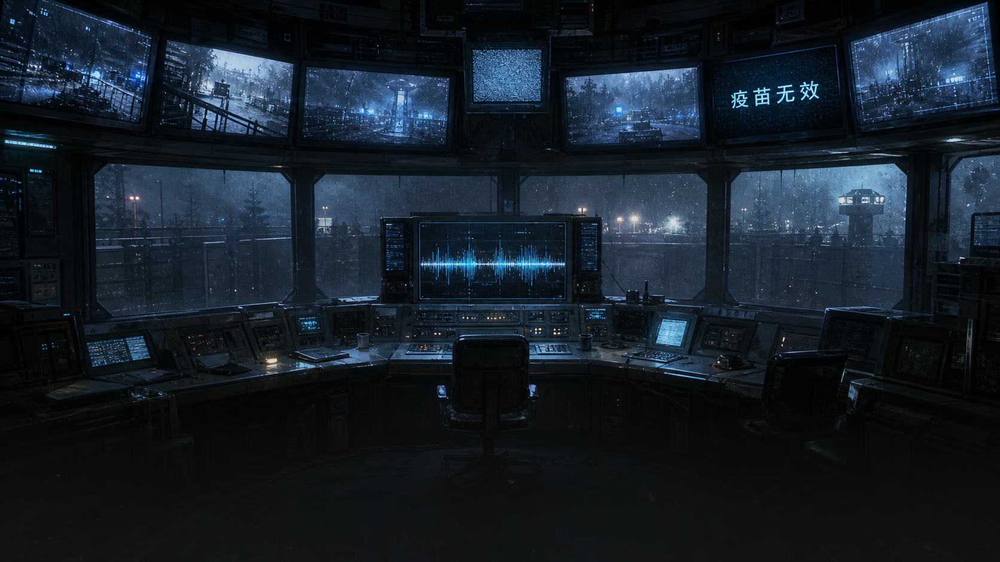
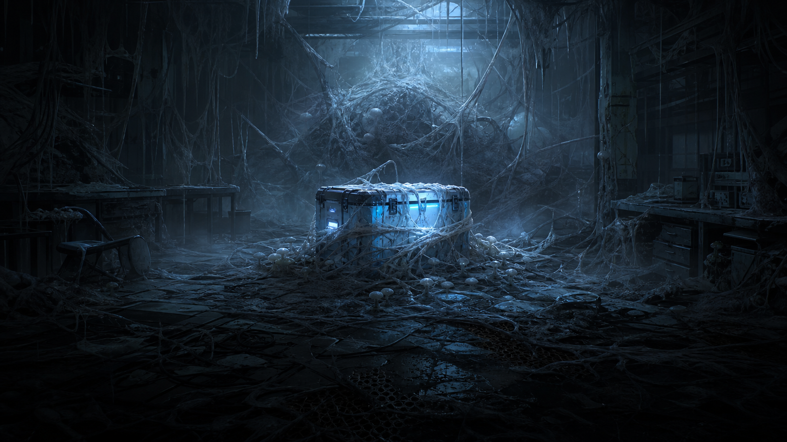
World & Premise
故事发生在感染后的工业区。运输机坠毁，安全区派出沈砚小队回收疫苗。对抗局潜伏者灰隼留下“疫苗无效”的死亡讯息，迫使玩家在任务命令、现场线索和人物信任之间做判断。
Character Engine
沈砚负责选择，林禾负责判断疫苗与异常，阿拓负责维修和救援，许燃负责通讯也负责背叛，邵戟则把隐藏冲突推到台前。每个人都对应一组可被玩家触发的后果。
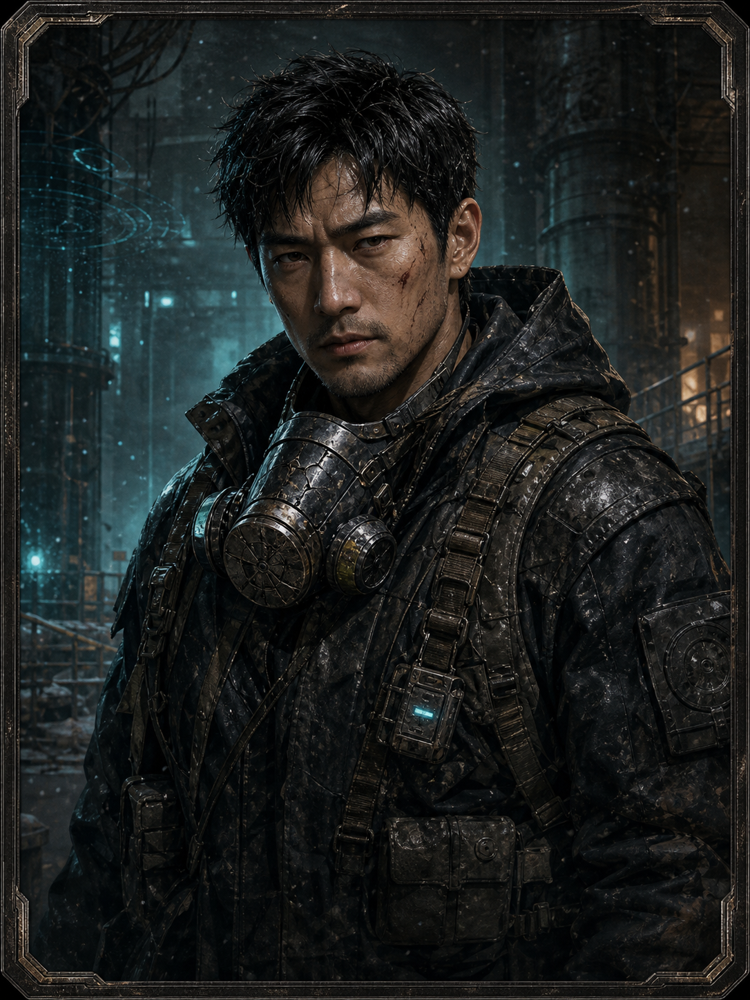
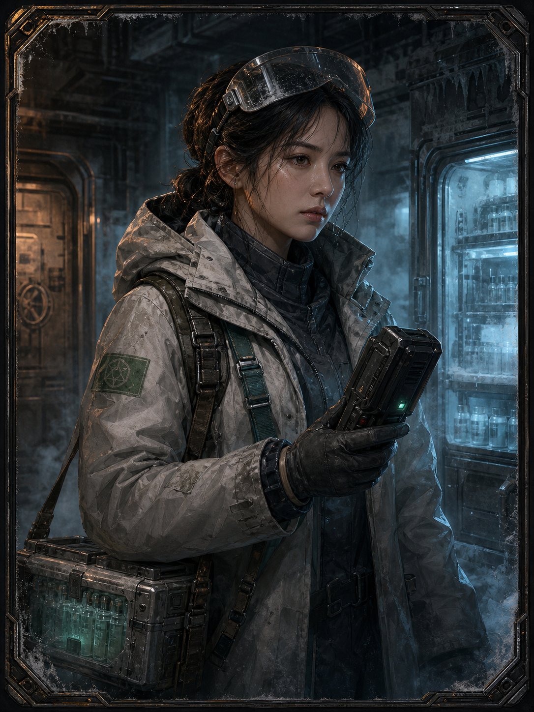
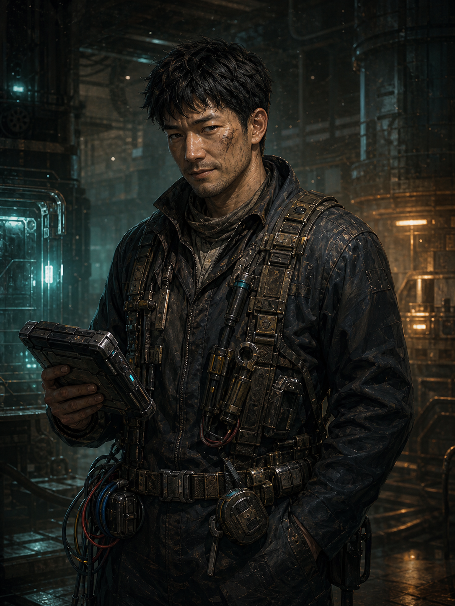
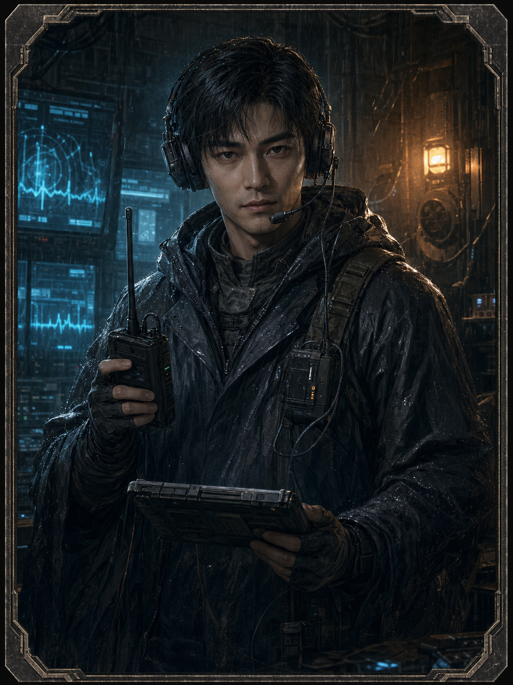
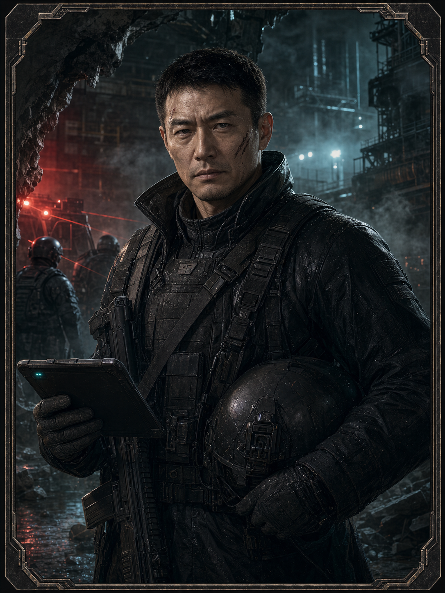
Story Spine
“疫苗无效”成为任务阴影。
选择进入方式，确认现场风险。
决定阿拓与许燃是否同行。
验证疫苗疑点，决定音爆弹。
疫苗到手，交给谁成为主分岔。
许燃暴露，对抗局突入。
Branch Logic
交给林禾、阿拓或许燃，决定第五章三条主故事线。
阿拓是否救过许燃，改变白鸮是否立即杀人。
是否修好音爆弹，决定能否转移感染者群。
感染、死亡、异化、冷舱休眠，形成结局主题。
Three Main Storylines
她能识别许燃异常，避免疫苗被白鸮直接带走。
白鸮可以靠近夺箱，但是否杀阿拓取决于前面的救命债。
最危险的交接，等于把任务目标交给隐藏敌方。
Route Map
Endings 1-4
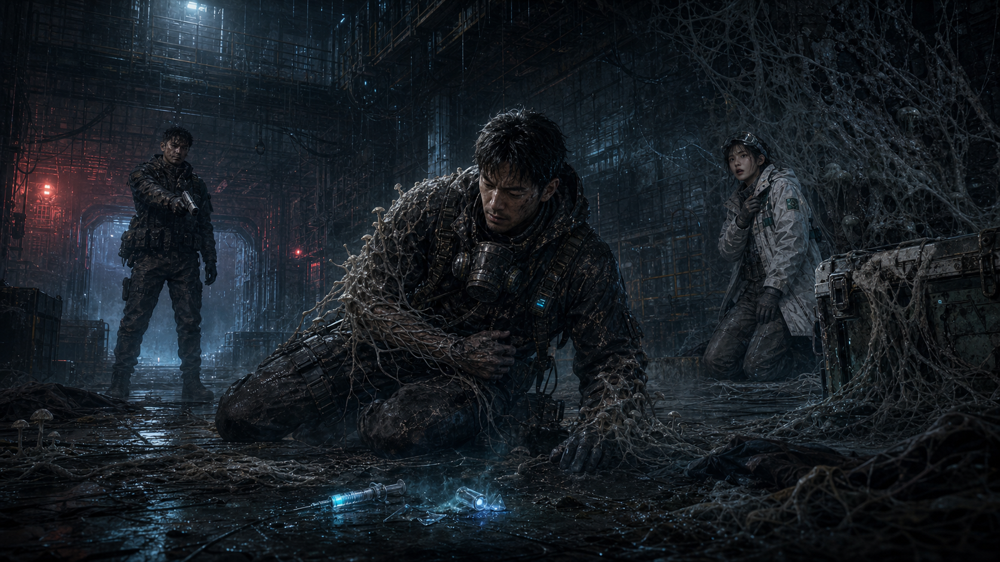
结局 1沈砚给自己使用疫苗，发现疫苗无效并异化。希望被错误使用，变成第二次伤害。
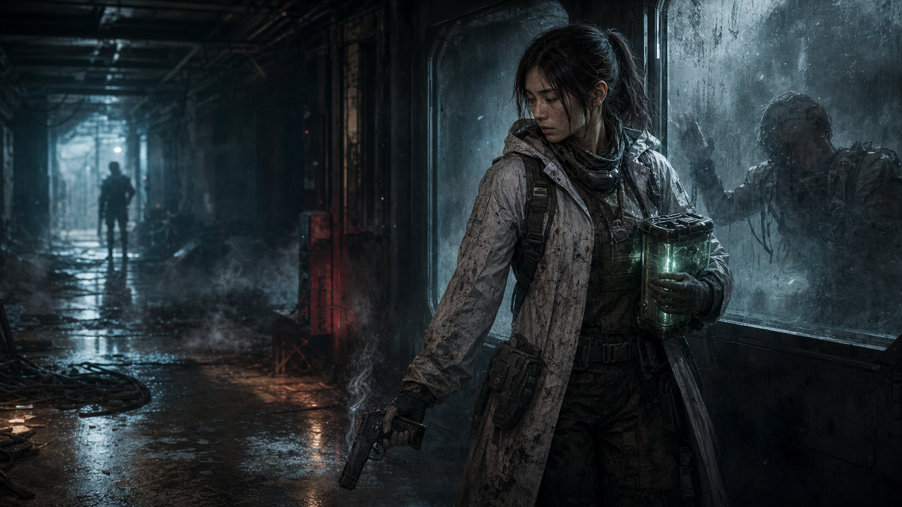
结局 2沈砚选择自戕，不赌疫苗，也不让自己成为新的感染源。
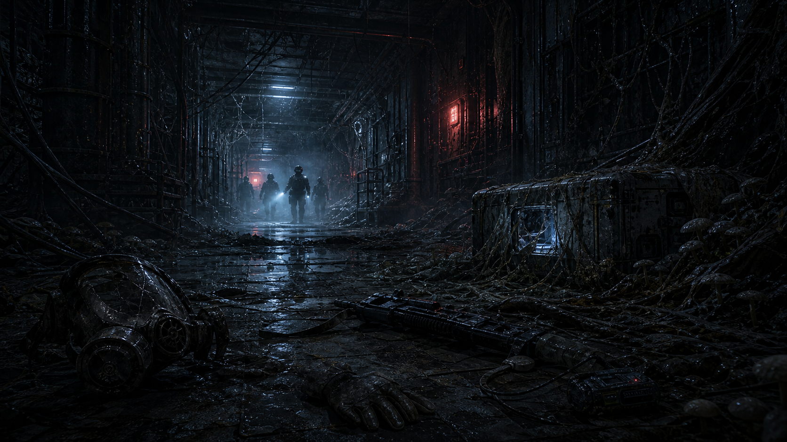
结局 3无音爆弹却继续缠斗，三人死于感染者攻击，对抗局最后取走疫苗。
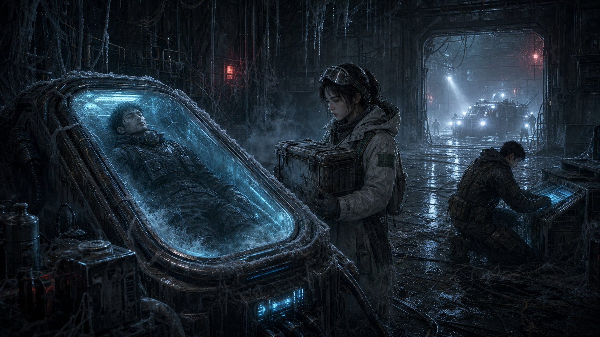
结局 4安全区拿回疫苗，沈砚被冷舱休眠带回。死亡被推迟，问题没有消失。
Endings 5-8
三人逃出厂区，安全区拿回疫苗。他们带回的不是答案，而是必须验证的问题。
阿拓没获得许燃迟疑，被杀；沈砚死亡，林禾带回两枚铭牌。
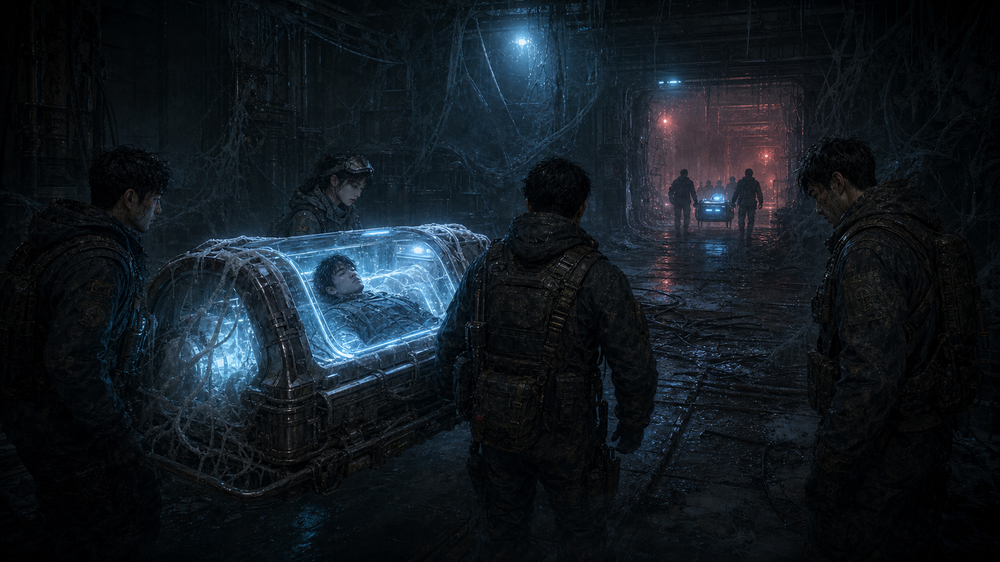
结局 7对抗局带走疫苗，沈砚感染后进入冷舱。任务失败，但死亡被暂时推迟。
三人逃出厂区，却没拿回疫苗。活着回来，不等于完成任务。
Design Logic
前半段的选择看似是路线效率、分组和道具判断；后半段才揭示它们真正影响的是信任、愧疚、迟疑和生还概率。这样玩家在回看时会理解：故事不是突然分叉，而是早就埋好了引线。
进入方式、分组、道具、交接对象。
谁信任谁，谁欠谁一条命，谁有机会靠近疫苗箱。
许燃归队，邵戟突入，隐藏变量集中兑现。
疫苗、生命、真相和希望不可能同时保全。
Closing
当前版本已经具备完整故事闭环：40 个剧情节点、3 条主故事线、8 个去重结局。后续可以继续扩展林禾线、许燃视角、对抗局动机，或把冷舱结局作为续作入口。